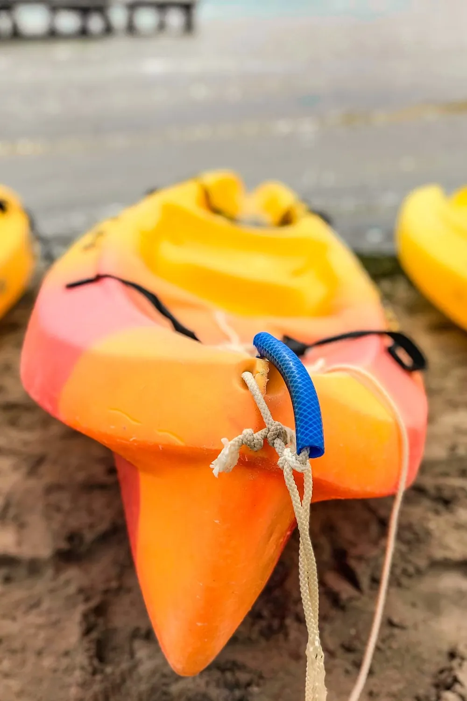
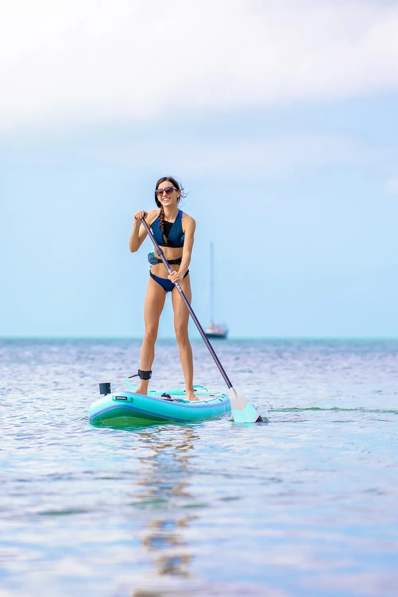
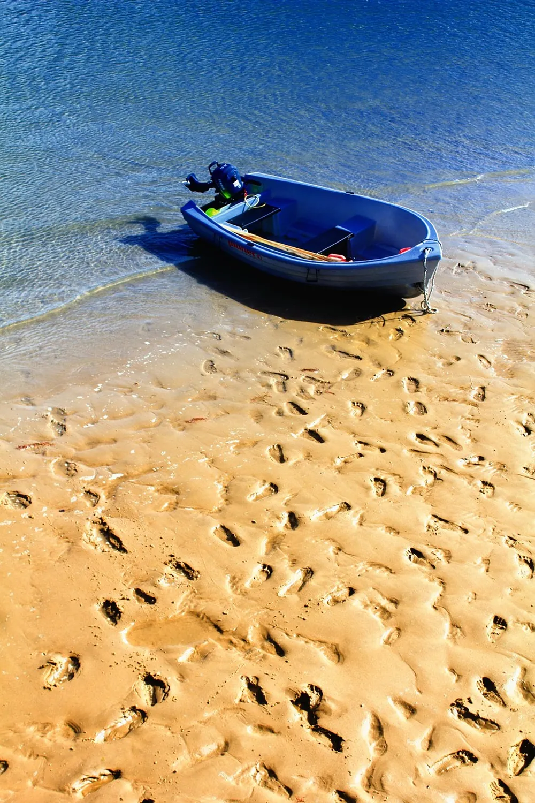

Le golfe d'Ajaccio, à la pagaie ou au moteur.
Kayaks, paddles, bateaux et jet-skis à louer à l'heure ou à la journée. Gilets, bidon étanche et carte des criques compris.


25minde pagaie jusqu'à la première crique

Les prochains départs
Les embarcations encore libres aujourd'hui. Touchez « Réserver » : on garde la place et on vous rappelle dans l'heure.
·
Démonstration : les places libres changent chaque jour.
Sept embarcations, de la pagaie aux 115 chevaux
Toutes vérifiées chaque matin avant le premier départ.
Le ponton en quatre chiffres
7embarcations, du kayak une place au semi-rigide
0permis pour les kayaks, les paddles et le bateau de 6 chevaux
25′de pagaie jusqu'à la première crique
19 hdernier retour au ponton, coucher de soleil compris
Un ponton, au bout de la plage
On loue ici ce qu'il faut pour voir le golfe depuis l'eau, sans rien compliquer. Vous arrivez en maillot, on vous montre la carte, on règle le gilet, et vous partez.
- 01Vérifié chaque matinCoques, moteurs et pleins contrôlés avant le premier départ.
- 02Tout est comprisGilets, bidon étanche et carte des criques pour chaque sortie.
- 03La météo décidePar drapeau rouge, la sortie est remboursée ou déplacée, au choix.

La mer est plus calme le matin. Le ponton ouvre à 9 h.